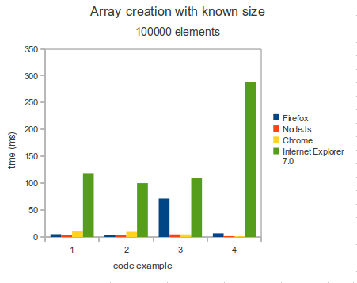
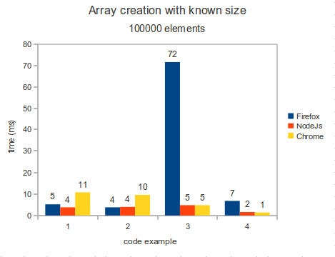
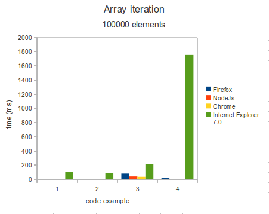
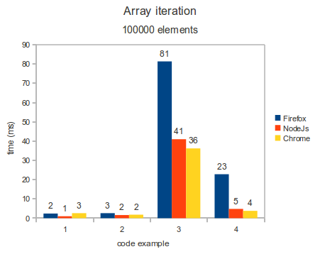
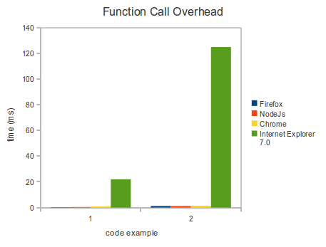
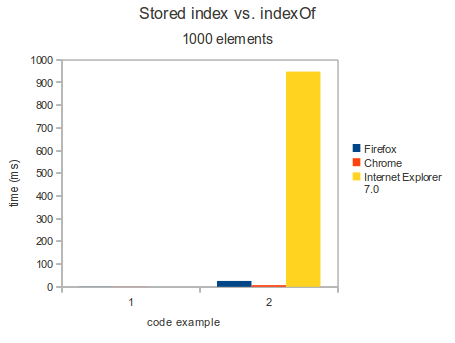

Array Creation
// example 1: Use goog.array.repeat.
var arr1 = goog.array.repeat(2, 100000);
// example 2: Use access by index
var arr2 = [];
for (var i = 0; i < 100000; i++) {
arr2[i] = 2;
}
// example 3: Allocate using access by index.
var arr3 = [];
arr3[999] = 2;
for (var i = 0; i < 100000; i++) {
arr3[i] = 2;
}
// example 4: Use push
var arr4 = [];
for (var i = 0; i < 100000; i++) {
arr4.push(2);
}

Array iteration
// example 1: check arr.length each iteration
for (var i = 0; i < arr.length; i++) {
var tmp = arr[i] + arr[i];
}
// example 2: store arr.length in a variable
for (var i = 0, li = arr.length; i < li; i++) {
var tmp = arr[i] + arr[i];
}
// example 3: for ... in ...
for (var i in arr) {
var tmp = arr[i] + arr[i];
}
// example 4: forEach
arr.forEach(function(element, index, arr) { var tmp = arr[index] + arr[index]; });

Function call overhead
var obj = { x: [], getX: function(index) {return this.x[index]; } };
for (var i = 0; i < 10000; i++) {
obj.x.push({});
}
// example 1: direct access
for (var i = 0; i < 10000; i++) {
obj.x[i];
}
// example 2: wrapper function
for (var i = 0; i < 10000; i++) {
obj.getX(i);
}

Stored indexes vs. goog.array.indexOf
var arr = [];
for (var i = 0; i < 1000; i++) {
arr.push({ index: i });
}
// example 1: stored indexes
for (var i = 0; i < 1000; i++) {
arr[arr.index];
}
// example 2: goog.array.indexOf
for (var i = 0; i < 1000; i++) {
arr[goog.array.indexOf(arr, arr[i])];
}
